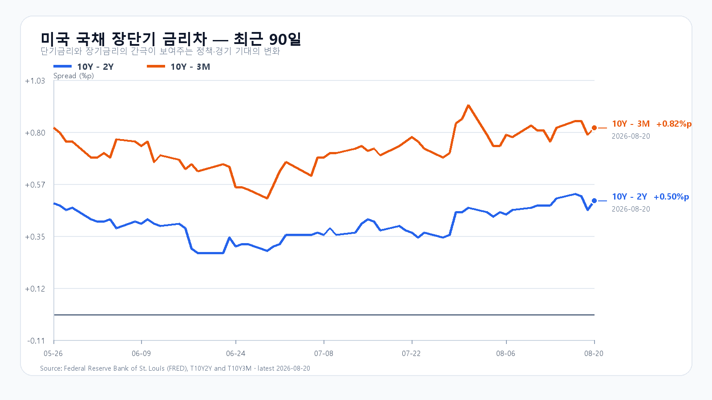

오늘의 한 문장
유가와 미국 장기금리의 동반 상승은 지수 상단을 제한합니다. 그러나 Micron 상승과 DRAM 현물 강세는 메모리주의 하단을 받칩니다. KOSPI 6,700선과 외국인 순매수가 함께 유지되면 전일 급반등 뒤 숨 고르기로 볼 수 있습니다.
전일 반등은 외국인이 이끌었다
KOSPI는 8월 20일 5.89% 오른 6,852.58에 마쳤습니다. 삼성전자는 9.49%, SK하이닉스는 12.73% 상승했습니다. 전날 급락분을 하루 만에 상당 부분 되돌린 움직임입니다.
외국인은 KOSPI 현물을 1조7,068억원 순매수했고 비차익 프로그램도 1조2,719억원 들어왔습니다. 외국인 현물은 오전 9시 30분 844억원 순매도에서 오전 10시 518억원 순매수로 돌아선 뒤 오후 2시 1조2,096억원까지 늘었습니다. 장 막판에만 만들어진 반등은 아니었습니다.
다만 20일의 미국 ETF 움직임을 오늘 한국장 호재로 그대로 더하면 안 됩니다. EWY와 SK하이닉스 ADR의 상승에는 이미 끝난 한국장 급등이 반영돼 있습니다. 오늘 새로 확인할 것은 미국 금리·유가 부담 속에서도 외국인이 다시 매수하는지입니다.
| 항목 | 확정값 | 오늘 기준 |
|---|---|---|
| KOSPI | 6,852.58(+5.89%) | 6,700 방어 · 6,950 돌파 |
| KODEX 레버리지 | 108,710원(+12.37%) | 105,000원 방어 · 110,895원 돌파 |
| 외국인·비차익 | +1조7,068억 · +1조2,719억원 | 장 초반 순매수 유지 |
| 삼성전자·SK하이닉스 | 271,000원 · 1,691,000원 | NXT 가격 유지 |
유가 93달러, 10년물 4.69%
미국 증시는 S&P500 -0.87%, Nasdaq -1.00%로 밀렸습니다. Brent는 2.4% 오른 93.78달러까지 올라 중동 긴장과 물가 부담을 다시 키웠습니다. 미국 10년물 국채금리도 4.65%에서 4.69%로 상승했습니다.
주간 신규 실업수당 청구는 20만6,000건으로 낮은 수준을 유지했고, 필라델피아 연은 제조업 지수는 47.4로 올랐습니다. 경기의 급격한 둔화보다 견조한 수요와 가격 압력이 부각되면서 장기금리 부담이 커졌습니다.
Walmart는 동일점포 매출 둔화와 신중한 이익 전망으로 9.2% 하락했습니다. 소비와 금리의 부담이 함께 드러난 밤이지만, 오늘 국내 장중에 예정된 미국 핵심 지표는 없습니다.

지수와 달리 반도체는 버텼다
Nasdaq과 QQQ가 각각 1.00%, 0.72% 내렸지만 SOXX는 0.52%, SMH는 0.31% 올랐습니다. Nvidia는 0.33% 내렸고 AMD는 0.65%, Broadcom은 0.43% 상승했습니다. Micron은 3.97% 올라 상대 강도가 가장 뚜렷했습니다.
TrendForce의 8월 20일 DRAM 현물 평균도 DDR5 16Gb 0.94%, DDR4 16Gb 0.54%, DDR4 8Gb 0.15% 올랐습니다. 유가와 금리의 압박에도 메모리 가격과 관련 주가는 버텼습니다. 전일 국내 반도체 급반등을 모두 정당화하는 신호는 아니지만, 이익 추정의 바닥이 무너졌다는 신호도 아닙니다.
오늘의 시나리오
KOSPI 6,700~6,950
유가와 금리 부담으로 상승 탄력이 둔해지지만 메모리주가 버팁니다. 6,700선과 외국인 순매수가 유지되면 전일 급등 뒤 숨 고르기입니다.
KOSPI 6,950~7,200
Micron과 DRAM 강세가 국내 메모리주로 이어지고 외국인·비차익 매수가 지속됩니다. 전일 고점 6,904.55를 넘어 6,950 위에 안착해야 합니다.
KOSPI 6,400~6,700
Brent 93달러대와 미국 장기금리 상승이 차익실현을 자극합니다. 외국인이 순매도로 돌아서고 6,700을 회복하지 못하면 변동성이 다시 커집니다.
2차 지지 100,130원 · 1차 지지 105,000원 · 기준점 108,710원 · 1차 저항 110,895원.
전체 장중 경로는 KOSPI 6,350~7,250으로 봅니다. 오늘 대응 점수는 공격 25 · 관망 50 · 방어 25입니다.
오늘 밤 일정은 한국장 이후다
미국 7월 주별 고용지표는 한국시간 오후 11시에 나옵니다. 한국장 마감 뒤 일정입니다. 장중에는 KOSPI 6,700선, 외국인 현물과 비차익 프로그램, 삼성전자·SK하이닉스의 NXT 대비 가격 유지가 더 직접적인 확인값입니다.